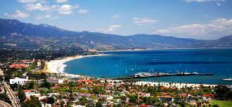
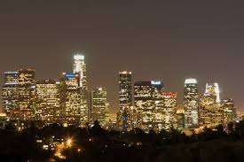
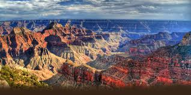
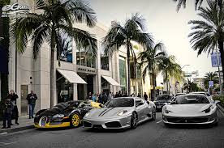
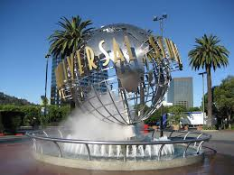
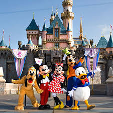
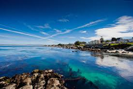
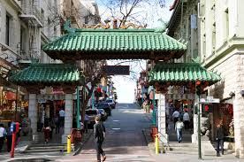
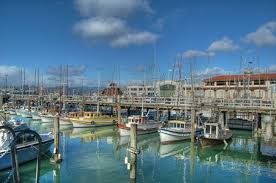

|
DJ Tours and Travels |

Welcome To The West Coast of USA
West Coast of USA , world famous for DisneyLand, The famous walk of Fame, the place where all THE movies are made, chances to meet the hottest stars and much more!
9 Days/8 Nights Itinerary
|  |
Day 1 : Las Vegas: Arrive in Las Vegas (Friday or Saturday or Sunday)
|
Day 2 : Las Vegas - Grand Canyon - Las Vegas
Breakfast at your hotel
Early morning depart to Grand Canyon by small plane to enjoy the aerial view of the famous Canyons and Colorado river.
In the evening once again see various hotels known for Casinos and shows. Visit to Freemont area in the evening. |
 |
| |
Day 3 : Las Vegas - Los Angeles
Proceed to Los Angeles. Arrive in Los Angeles -In the ‘City of Angels’, shop on Rodeo Drive, ride roller coasters in Disneyland or chill out on Venice Beach.
It’s a veritable smorgasbord for the senses and a brilliant way to begin this adventure along California’s coast.
The world famous city of Hollywood stars. Drive through the rich and famous Rodeo Drive, view Beverly Hills Area,
Hollywood Drive and Sunset Boulevard. Visit Madame Tussuad's Wax Museum.
|  |
Day 4 : Las Vegas
Full day of excitement at the Universal Studios. Day of excitement begins with a "Studio tour" of Hollywood's busiest
back lot, see how and where movies and TV shows are filmed. Face King Kong as he unleashes 30 feet and 30,000 pounds
of howling, growling in 3D show. Watch the mesmerizing "Water World" show, and the newest attraction "Transformer"
at Universal Studios, where Hollywood comes to life!
|  |
|  |
Day 5 : DisneyLand
Enter a magical kingdom where you can sail with pirates, explore exotic jungles, meet fairy-tale princesses,
dive under the ocean and rocket through the stars-all in the same day! Disneyland Park is a beloved
Southern California destination where generations of families have made their Disney dreams come true.
Opened in 1955, Walt Disney's original theme park is divided into 8 extravagantly themed lands-Main Street, U.S.A.,
Tomorrowland, Fantasyland, Mickey's Toontown, Frontierland, Critter Country, New Orleans Square and Adventureland.
|
Day 6 : Los Angeles - Solvang - Monterey
Proceed to Monterey. Drive past Solvang - A traditional Danish Town.
On arrival visit Monterey Bay Aquarium one of the largest aquarium in the world.
Relax by the beach, where the hikes are long and breezy, the seafood is fresh and the marine life is active.
Explore the waters by kayak or journey down the coast to Big Sur to see pristine beaches,
magnificent redwoods and some truly beautiful coastal landscapes.
|  |
|  |
Day 7 : Monterey - San Francisco
Visit Mystery Spot at Santa Cruz. Proceed to San Francisco. Arrive in San Francisco.
City tour includes City Hall and China town, Union Square. Enjoy the cable tram ride to Lombard street
followed by a short walk on the Crooked Street. Visit Twin Peaks, Golden Gate Park and the Golden Gate Bridge.
|
Day 8 : San Francisco - Napa Valley - San Francisco
Visit to California Academy of Sciences to see The rainforest, enjoy show at the Planetarium,
The last reef 3D and other different exhibits. Visit Sausalito city, situated near the northern end of the
Golden Gate Bridge. Developed rapidly as a shipbuilding center in World War II, is a picturesque residential
community, and as a tourist destination. Enjoy San Francisco Golden Gate Bay Cruise and Fisherman's Wharf.
Later proceed to Napa Valley. Splendor of beautiful vineyards and picturesque Vall ey.
|  |
Day 9 : Departure from San Francisco
Board the flight to your hometown. Tour Concludes.
|
Meals on Tour :
Day 1 : Dinner
Day 2 - 8 : Breakfast, Lunch and Dinner
Day 9 : Breakfast
Extra Topping :
1) Tea/Coffee at Grand Canyon Base Station.
2) Ice-cream during Las Vegas to Los Angeles journey.
3) Tea/Coffee enroute Los Angeles to Monterrey.
4) Coffee at San Francisco Golden Gate Bay Cruise.
Our Speciality :
Lunch Coupons at Disney World and Universal Studios.
Caring Tour Manager throughout the tour.
Reporting & Dropping for Joining & Leaving :
Day 1 : At the Airport/Hotel/Sight seeing place (Please re-confirm with our tour consultant 8 days prior to the tour).
Day 9 : Tour concludes at the Hotel/ Airport- as per scheduled group flight.
! EARLY BIRDS GET DISCOUNTS !
TOUR PACKAGE : Rs.2,00,000 **Terms and Conditions Apply